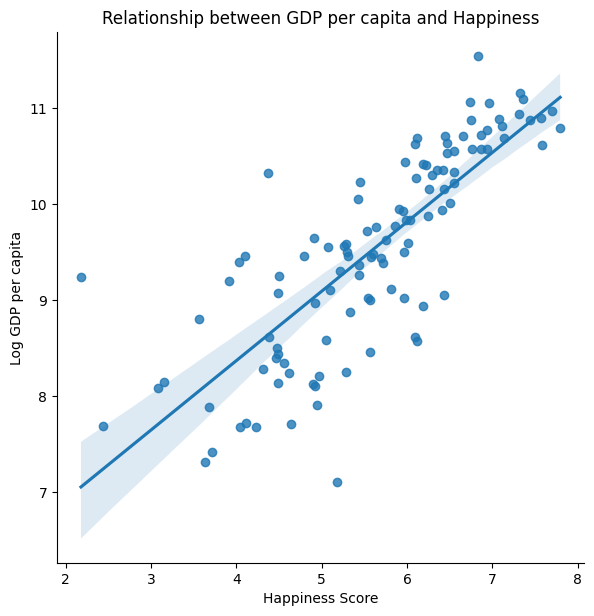
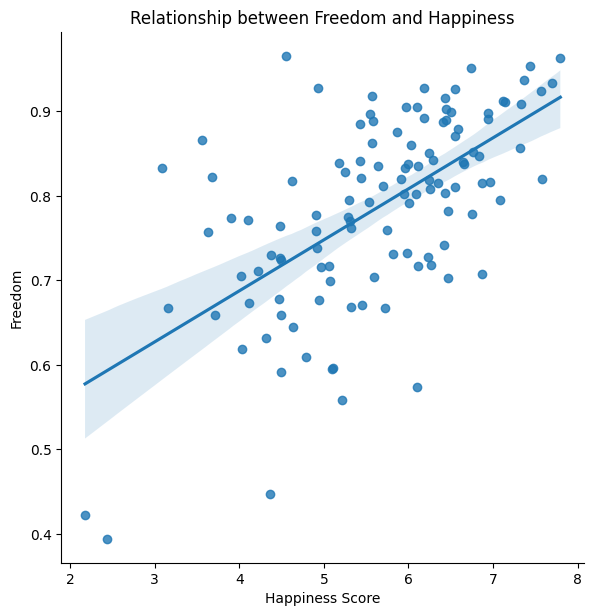
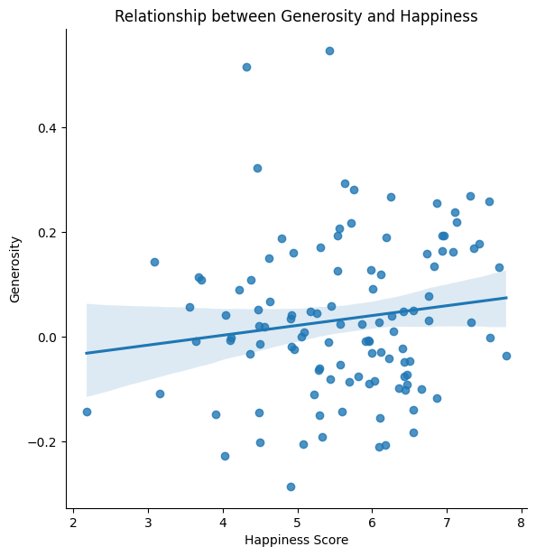
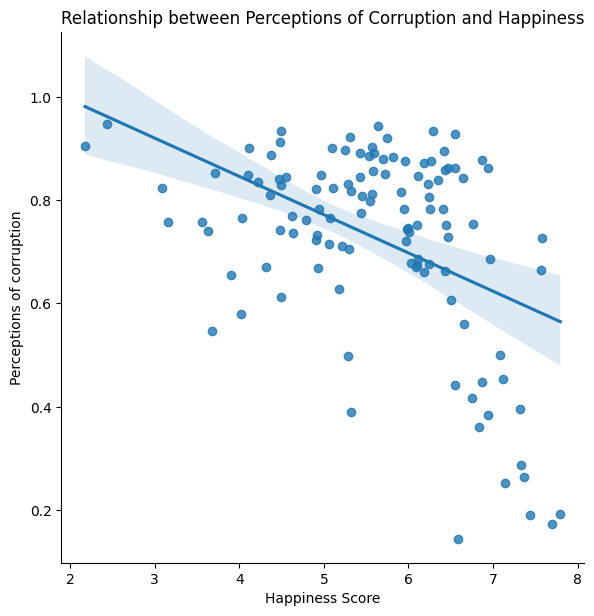

import pandas as pd
import matplotlib.pyplot as plt
import numpy as np
import seaborn as sns
hp_df = pd.read_csv('https://raw.githubusercontent.com/kjh97/DH-140/main/data/World%20Happiness%20Report%202005-2021.csv')The Happiness Data Project
Project Description
The data I will be analyzing in my final project was gathered from the World Happiness Report (by the Gallup World Survey), which seeks to measure and make more concrete what has always been a very subjective and abstract, yet an infinitely integral aspect of human life – happiness.
Data: World Happiness Reports from 2005-2021
Happiness is something that all humans crave and desire. From Aristotle who espoused a eudaimonic and virtue-driven happiness, to Epicurus who advocated for hedonism and embracing feelings of pleasure, philosophers have long discussed and debated what happiness entails, and how we as humans can seek to achieve it. Nonetheless, it remains as enigmatic and relevant as ever, with mental health awareness on the rise and nascent fields like positive psychology dedicated to the study of happiness. In a way, it seems like there has been little to no progress made in the past centuries on how we can go about achieving this ever-elusive goal. Yet, perhaps it was this very sense of abstruseness that has driven my lifelong fascination with happiness, well-being, and the factors that influence it.
The question then arises – how can I approach a topic so abstract and nuanced, when it has even stumped humankind for centuries? Well, I believe the answer to that is, data. By looking at happiness through the lens of data, I hope to uncover and analyze patterns in happiness around the world, and hopefully gain new insights into what factors affect happiness.
Research Questions
How do economic factors affect happiness?
How does one’s social environment affect happiness?
How has global happiness been affected by the COVID-19 pandemic?
Data Summary
The World Happiness Report data that I have used for this project was preprocessed, synthesized, and published by Jahaidul Islam on kaggle. First, I downloaded and imported the csv file as a pandas dataframe, which will later allow me to manipulate and analyze the data.
Then, I sorted the data according to the Happiness Score as it was previously sorted by country name.
hp_df.sort_values("Happiness Score", ascending = False, inplace=True)
hp_df.set_index('Country', inplace=True)This table below provides a brief description and statistical summary of the different metrics that can be found in the data, such as ‘Social support’ and ‘Life expectancy’, which are factors that influence happiness. The ‘Happiness Score’ is the average happiness rating assigned to a country based on a self-report well-being assessment known as the Cantril Ladder, which measures well-being on a scale of 1 to 10. There are three main categorizations based on the scores – scores above 7 are ‘Thriving’ (strong and consistent well-being), scores from 4-7 are ‘Struggling’ (moderate and inconsistent well-being), and scores 4 and below are ‘Suffering’ (well-being at high risk).
hp_df.describe()| Year | Happiness Score | Log GDP per capita | Social support | Life expectancy | Freedom | Generosity | Perceptions of corruption | Positive affect | Negative affect | Confidence in national government | |
|---|---|---|---|---|---|---|---|---|---|---|---|
| count | 2089.000000 | 2089.000000 | 2062.000000 | 2076.000000 | 2031.000000 | 2057.000000 | 2009.000000 | 1976.000000 | 2065.000000 | 2073.000000 | 1873.000000 |
| mean | 2013.727621 | 5.473747 | 9.378408 | 0.811542 | 63.180326 | 0.745462 | 0.000102 | 0.746474 | 0.651421 | 0.270544 | 0.483914 |
| std | 4.455614 | 1.115567 | 1.143520 | 0.118935 | 6.948546 | 0.140751 | 0.161082 | 0.186136 | 0.105954 | 0.085849 | 0.191515 |
| min | 2005.000000 | 2.178809 | 5.526723 | 0.290184 | 6.720000 | 0.257534 | -0.335739 | 0.035198 | 0.178886 | 0.082737 | 0.068769 |
| 25% | 2010.000000 | 4.651972 | 8.473547 | 0.747664 | 58.965000 | 0.651689 | -0.113172 | 0.689840 | 0.570057 | 0.207652 | 0.334808 |
| 50% | 2014.000000 | 5.405246 | 9.463269 | 0.834770 | 64.980003 | 0.767357 | -0.023366 | 0.801339 | 0.662837 | 0.260328 | 0.467046 |
| 75% | 2017.000000 | 6.294282 | 10.347656 | 0.904682 | 68.362499 | 0.857677 | 0.090584 | 0.870789 | 0.737176 | 0.321706 | 0.616302 |
| max | 2021.000000 | 8.018934 | 11.665803 | 0.987343 | 74.349998 | 0.985178 | 0.706377 | 0.983276 | 0.883586 | 0.704590 | 0.993604 |
I also created another dataframe that provided me with the 2021 World Happiness Report data (latest available data from the dataset), in order to help me analyze and visualize the latest data on happiness.
hp21_df = hp_df[hp_df['Year']==2021]Based on the data, the following two tables represent the top 10 happiest countries in the world and their happiness scores, as well as the top 10 least happiest countries in the world and their happiness scores respectively.
hp21_df['Happiness Score'].head(10).plot(xticks=np.arange(9),
kind='barh', figsize= (8, 8))
plt.xlabel("Happiness Score")
plt.title('Top 10 Happiest Countries in 2021')Text(0.5, 1.0, 'Top 10 Happiest Countries in 2021')hp21_df['Happiness Score'].tail(10).plot(xticks=np.arange(9),
kind='barh', figsize= (8, 8))
plt.xlabel("Happiness Score")
plt.title('Top 10 Least Happiest Countries in 2021')Text(0.5, 1.0, 'Top 10 Least Happiest Countries in 2021')The following box plot shows the statistical distribution for Happiness Scores of countries in 2021, illustrating the minimum score, first quartile, median, third quartile, and maximum happiness score. Furthermore, it also shows the outliers, as can be seen by the two data points at the bottom of the graph, which based on the table above, likely represent the countries Lebanon and Afghanistan.
hp21_df['Happiness Score'].plot(kind = 'box', figsize = (8,8))
plt.ylabel("Happiness Score")
plt.title('Boxplot of Happiness Scores')Text(0.5, 1.0, 'Boxplot of Happiness Scores')
Meanwhile, the histogram provides a better understanding of how the happiness scores are distributed by frequency, giving a more visual representation of how the world as a whole is performing in their happiness scores.
hp21_df['Happiness Score'].plot(kind = 'hist', figsize = (8,8))
plt.xlabel("Happiness Score")
plt.title('Frequency distribution of Happiness Scores')Text(0.5, 1.0, 'Frequency distribution of Happiness Scores')Data Analysis
Economic factors and Happiness
In this section, I will look at economic factors and their influence on happiness across countries. One of the most common ways to measure a country’s economic condition is through the gross domestic product (GDP) per capita, which calculates the average economic output of each individual within a nation.
Data Visualization 1: The histogram below illustrates the frequency distribution of the GDP per capita across countries featured in the World Happiness Report.
hp21_df['Log GDP per capita'].plot(kind = 'hist', figsize = (8,8))
plt.xlabel("GDP per capita (log)")
plt.title('Frequency distribution of GDP per capita (log) ')Text(0.5, 1.0, 'Frequency distribution of GDP per capita (log) ')Data Visualization 2: The scatterplot below illustrates the relationship between the GDP per capita and happiness scores for each country, and uses a best-fit line to draw an association between the two variables.
sns.pairplot(data=hp21_df, kind='reg', height = 8,
x_vars=['Happiness Score'],
y_vars=['Log GDP per capita'])
plt.title('Relationship between GDP per capita and Happiness')Text(0.5, 1.0, 'Relationship between GDP per capita and Happiness')
COVID-19 and its effects on Happiness
In this section, I will explore the effects of the COVID-19 pandemic on happiness. In order to determine its effects, I will compare and analyze various statistics from the 2019 vs 2021 World Happiness Report, such as average happiness scores and their statistical distribution.
Social environment and Happiness
In this section, I will look at the relationship between one’s social environment and happiness across countries. Social support, as measured in the World Happiness Report, is operationalized by interpersonal connections and interactions such as with friends and partners, as well as social trust in others within their society. In addition, factors such as freedom to make choices, generosity, perceptions of corruption, and confidence in national government play a role in building a trusting social environment, and is believed to have a positive influence on happiness.
Data Visualization 3:
Data Visualization 4:

Data Visualization 5:

Data Visualization 6:
